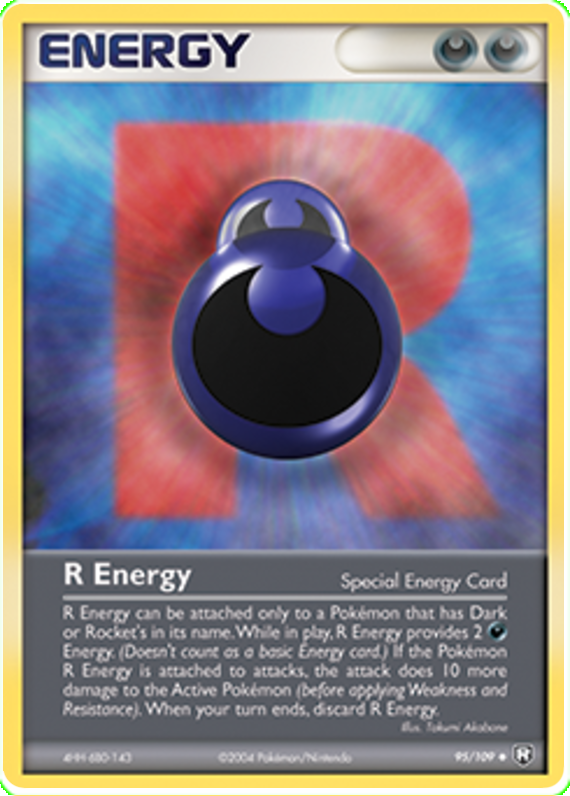

9 cards each of the 9 basic Energy types (Grass, Fire, Water, Lightning, Psychic, Fighting, Metal, Fairy, Darkness)
At least 2 Dragon Energy cards (special win condition)
Rocket's Darkness Energy card(s) (special effect + Dark Energy)
Shuffle the deck well.
Each player draws 3 cards for their starting hand.
Each player has their own Energy Zone (area in front of them to place one Energy card per turn).
2. Card Zones
Hand: Your private cards.
Energy Zone: Where you can place one Energy card per turn from your hand. Up to 5 different Energy types allowed in the Energy Zone.
3. Turn Structure
Draw 1 card from the deck.
Choose one action to perform:
Play an Energy card to your Energy Zone (only one card per turn).
Play a Combo from your hand (discard the necessary Energy cards and perform its effect).
If you have more than 5 cards in hand at the end of your turn, discard down to 5.
4. Energy Zone Card Effects
Dark: You and the person counterclockwise take a sip!
Fairy: Reverse any rule until your next turn!
Fire: Sip and burn someone else to take 2 sips!
Fighting: Throw dice with anyone. Whichever throws lower loses and sips! (in case of no dice, Rock Paper Scizzors also works here!)
Electric: Zap the entire table. Everyone sips!
Grass: You've been healed. Skip your next drink!
Psychic: Choose anyone to throw dice with. Same number, everyone else drinks. Different number, both of you drink! (in case of no dice, the person clockwise to you shares a sip with you)
Metal: You're built like Cbum, give 3 drinks to anyone! (can be multiple people)
Water: Hydrate. Drink some water you thirsty bitch!
5. Combos
To play a combo, discard the required Energy cards from your hand and apply the effect.
Combo Name
Cards Used (from Hand)
Effect
Tsunami
Water + Fighting
Discard all Fire cards from the Energy Zone. All affected players drink a sip.
Wildfire
Fire + Grass
Discard all Water cards from the Energy Zone. All affected players drink a sip.
Overload
Electric + Fire
Caster discards 1 Energy Zone card; all other players discard 2 Energy Zone cards. Others drink a sip.
Growth Surge
Grass + Water
Draw 1 card, then place 1 card from hand into the Energy Zone.
Earthquake
Metal + Fighting
All players discard their entire hand and draw 2 new cards.
Mind Flux
Psychic + Fairy
Choose a player who must swap their entire hand and Energy Zone. That player drinks 2 sips.
Shadow Veil
Dark + Psychic
Choose a player who discards all cards of one Energy type from their Energy Zone. That player drinks 3 sips.
6. Special Energy Cards
Rocket's Darkness Energy
When played, immediately steal 2 cards from other players' hands:
Either 2 cards from one player, or 1 card each from two players.
Stolen cards go into your hand.
Players who lose cards this way drink 2 sips each.
After the effect, Rocket's Darkness Energy remains in your Energy Zone as a Dark Energy card.

Dragon Energy (2 cards total)
If a player controls both Dragon Energy cards in their Energy Zone at the end of their turn, they win immediately.
Dragon Energy cards cannot be discarded by combos but can be stolen by Rocket's Darkness Energy.
7. Win Condition
First player to have 3 of the same Energy type in their Energy Zone wins!
OR if a player controls both Dragon Energy cards in their Energy Zone at the end of their turn, they win immediately.
8. Additional Rules
Energy Zone limits: Max 3 cards per Energy type, max 15 cards total.
Energy Zone: Only 1 card can be placed there per turn.
Combos and special effects only affect cards in the Energy Zone unless otherwise stated.
Hands can have max 5 cards; discard excess at turn end.
Have fun! Drink responsibly and enjoy the chaos! 🥳